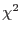

The variability tests are performed in the same way and using the same procedures as in the SAS plotting task lcplot.
The  statistics close to the bin number and a small Kolmogorov-Smirnov statistics with probabilities higher than 0.01 indicate that the source is unlikely to be variable.